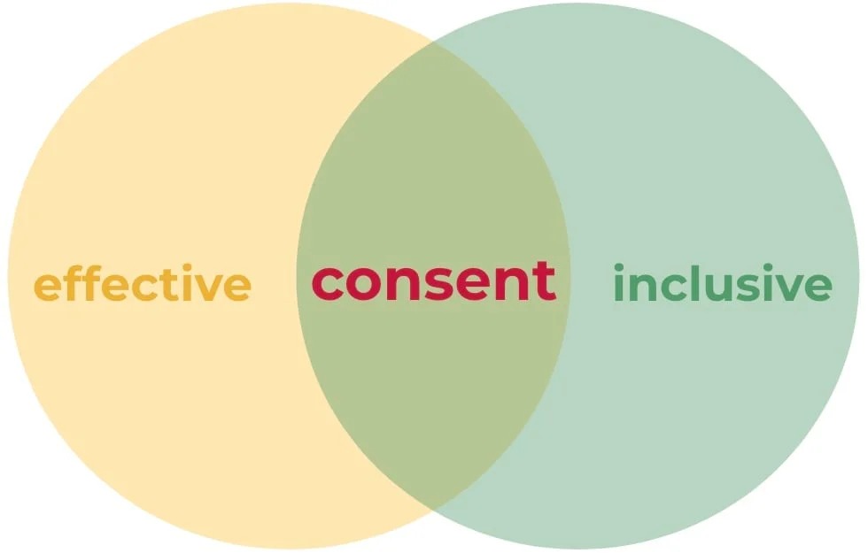

Consent Decision Making — faster decisions that actually hold
Consensus means everyone agrees. That rarely happens. Majority voting means someone loses. That breeds resistance. Consent works differently: a decision moves forward when nobody has a reasoned objection to it. Not everyone's preference. No losers. Faster than both, and the decisions stick.
What is Consent Decision Making?
Consent Decision Making is a structured process for groups to develop and test proposals. The key distinction is between three different responses:
- No objection — "I'd do it differently, but I can live with this"
- Concern — "I'm worried, but it doesn't block the decision"
- Objection — "This will cause a specific, demonstrable harm"
Only a genuine objection stops a proposal. And objections are not vetoes — they're information the group uses to improve the proposal until it no longer causes harm.
The method has roots in Sociocracy and Sociocracy 3.0 (S3), and has been adapted for practical use in teams with no governance background.

When Consent Decision Making is not the right tool
- When a single person has the authority and the information to decide — a committee process adds friction without value
- When speed matters more than buy-in — consent takes time; use it for decisions that need to be implemented, not just announced
- When the group has no shared purpose — consent requires that people are genuinely trying to solve the same problem
How we facilitate Consent Decision Making
The process has a clear structure. The facilitator's job is to keep the group on it and prevent the meeting from collapsing into debate.
- Present the proposal — clearly and briefly
- Clarifying questions — only to understand, not to debate
- Reaction round — each person speaks once, no discussion
- Amend — the proposer adjusts based on reactions
- Consent round — consent or reasoned objection
- Integrate objections — improve the proposal until no objections remain
Consent Decision Making in practice
Investment decision: six months to one session
A department had been unable to agree on investment priorities for six months. Different functions had conflicting interests and no shared framework for deciding. A facilitated consent session surfaced the actual objections — not the stated positions — and produced a decision with a clear implementation plan.
Policy development: all levels, one round
A nonprofit needed a new communications policy that reflected input from all levels of the organisation. Consent Decision Making let every voice shape the proposal without turning the process into an endless negotiation.
Leadership team: moving from consensus paralysis to workable agreements
A leadership team of eight had been operating on implicit consensus — which meant that any single objection could block any decision indefinitely. Switching to a consent-based process changed the question from "does everyone agree?" to "can everyone live with this?" Decisions that had been deferred for months moved in a single session. The team kept the practice after we left.
A decision that's been delayed long enough?
Tell us the situation. We'll design the session.